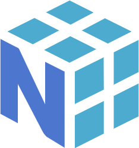

NumPy是什么
NumPy 的全称是“ Numeric Python”，它是 Python 的第三方扩展包，主要用来计算、处理一维或多维数组。
在数组算术计算方面， NumPy 提供了大量的数学函数。NumPy 的底层主要用 C语言编写，因此它能够高速地执行数值计算。NumPy 还提供了多种数据结构，这些数据结构能够非常契合的应用在数组和矩阵的运算上。
NumPy 的前身是 Numeric 程序包，该包由 Jim Hugunin 开发，在这之后，他还开发了另一个类似的的程序包 Numarray，相比前者而言 Numarray 具有更加全面的功能 。在 2005 年，Travis Oliphant 通过整合 Numarray 与 Numeric 软件包的功能，从而集成了 NumPy。NumPy 的最新版本 1.19.2 已于 2020 年 9 月10 日发布。
在矩阵乘法与数组形状处理上，NumPy 有着非常不错的性能，再加上 NumPy 的计算速度很快，这些都是 NumPy 成为一款数据分析工具的重要原因。
MatLab 是一款强大的数学计算软件，广泛应用在数据分析、电子通信、深度学习、图像处理、机器视觉、量化金融等领域，但近些年随着 Python 语言的迅猛发展，Python 被看作是一种更适合代替 MatLab 的编程语言。您可以使用 NumPy、SciPy 与 Matplotlib 等 Python 工具包搭建科学计算环境，比如 Anaconda 就是是一个开源的 Python 发行版本，它包含了 Python 、NumPy 等 180 多个科学包及其依赖项。
因为 NumPy 是 Python 的扩展程序包，所以您在学习 NumPy 之前应该具备一些 Python 基础知识，这对本教程的学习将大有裨益。如果您想了解关于 NumPy 更多的知识可浏览 NumPy 官网（https://numpy.org/）。
在数组算术计算方面， NumPy 提供了大量的数学函数。NumPy 的底层主要用 C语言编写，因此它能够高速地执行数值计算。NumPy 还提供了多种数据结构，这些数据结构能够非常契合的应用在数组和矩阵的运算上。

NumPy 的前身是 Numeric 程序包，该包由 Jim Hugunin 开发，在这之后，他还开发了另一个类似的的程序包 Numarray，相比前者而言 Numarray 具有更加全面的功能 。在 2005 年，Travis Oliphant 通过整合 Numarray 与 Numeric 软件包的功能，从而集成了 NumPy。NumPy 的最新版本 1.19.2 已于 2020 年 9 月10 日发布。
NumPy 作为一个开源项目，它由许多协作者共同开发维护，这也是 NumPy 的优势之一。
NumPy使用需求
随着数据科学（Data Science，简称 DS，包括大数据分析与处理、大数据存储、数据抓取等分支）的蓬勃发展，像 NumPy、SciPy（Python科学计算库）、Pandas（基于NumPy的数据处理库） 等数据分析库都有了大量的增长，它们都具有较简单的语法格式。在矩阵乘法与数组形状处理上，NumPy 有着非常不错的性能，再加上 NumPy 的计算速度很快，这些都是 NumPy 成为一款数据分析工具的重要原因。
数组形状可以理解为数组的维度，比如一维数组、二维数组、三维数组等；以二维数组为例，改变数组形状就是交换数组的行和列，也即将数组旋转 90 度。
NumPy 可以很便捷高效地处理大量数据，那么使用 NumPy 做数据处理有哪些优点呢？总结如下：- NumPy 是 Python 科学计算基础库；
- NumPy 可以对数组进行高效的数学运算；
- NumPy 的 ndarray 对象可以用来构建多维数组；
- NumPy 能够执行傅立叶变换与重塑多维数组形状；
- NumPy 提供了线性代数，以及随机数生成的内置函数。
NumPy应用场景
NumPy 通常与 SciPy（Python科学计算库）和 Matplotlib（Python绘图库）等软件包组合使用，这种组合方式被用来广泛地代替 MatLab 的使用。MatLab 是一款强大的数学计算软件，广泛应用在数据分析、电子通信、深度学习、图像处理、机器视觉、量化金融等领域，但近些年随着 Python 语言的迅猛发展，Python 被看作是一种更适合代替 MatLab 的编程语言。您可以使用 NumPy、SciPy 与 Matplotlib 等 Python 工具包搭建科学计算环境，比如 Anaconda 就是是一个开源的 Python 发行版本，它包含了 Python 、NumPy 等 180 多个科学包及其依赖项。
因为 NumPy 是 Python 的扩展程序包，所以您在学习 NumPy 之前应该具备一些 Python 基础知识，这对本教程的学习将大有裨益。如果您想了解关于 NumPy 更多的知识可浏览 NumPy 官网（https://numpy.org/）。
关注公众号「站长严长生」，在手机上阅读所有教程，随时随地都能学习。内含一款搜索神器，免费下载全网书籍和视频。

微信扫码关注公众号